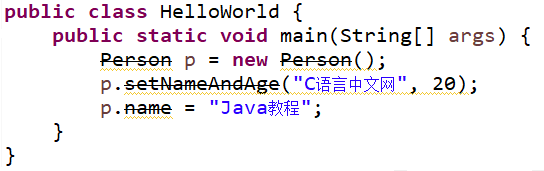

Java @Deprecated注解
Java 中 @Deprecated 可以用来注解类、接口、成员方法和成员变量等，用于表示某个元素（类、方法等）已过时。当其他程序使用已过时的元素时，编译器将会给出警告。
使用 @Deprecated 注解示例代码如下：
从图中可以看到代码中不仅有删除线，而且还有编译警告。
Java 9 为 @Deprecated 注解增加了以下两个属性：
示例代码如下所示：
@Deprecated 的作用与文档注释中的 @deprecated 标记的作用基本相同，但它们的用法不同，前者是 Java 5 才支持的注解，无须放在文档注释语法（/** ... */部分）中，而是直接用于修饰程序中的程序单元，如方法、类和接口等。
使用 @Deprecated 注解示例代码如下：
@Deprecated
public class Person {
@Deprecated
protected String name;
private int age;
public String getName() {
return name;
}
public void setName(String name) {
this.name = name;
}
public int getAge() {
return age;
}
public void setAge(int age) {
this.age = age;
}
@Deprecated
public void setNameAndAge(String name, int age) {
this.name = name;
this.age = age;
}
@Override
public String toString() {
return "Person [name=" + name + ", age=" + age + "]";
}
}
上述代码第 2 行类 Person、第 4 行的成员变量 name 和第 24 行的 setNameAndAge 方法都被 @Deprecated 注解。在 Eclipse 中这些被注解的 API 都会被画上删除线。调用这些 API 代码也会有删除线，示例代码如下。
public class HelloWorld {
public static void main(String[] args) {
Person p = new Person();
p.setNameAndAge("C语言中文网", 20);
p.name = "Java教程";
}
}
在 Eclipse 中代码显示如下图所示。

从图中可以看到代码中不仅有删除线，而且还有编译警告。
Java 9 为 @Deprecated 注解增加了以下两个属性：
- forRemoval：该 boolean 类型的属性指定该 API 在将来是否会被删除。
- since：该 String 类型的属性指定该 API 从哪个版本被标记为过时。
示例代码如下所示：
class Test {
// since属性指定从哪个版本开始被标记成过时，forRemoval指定该API将来会被删除
@Deprecated(since = "9", forRemoval = true)
public void print() {
System.out.println("这里是C语言中文网Java教程！");
}
}
public class DeprecatedTest {
public static void main(String[] args) {
// 下面使用info()方法时将会被编译器警告
new Test().print();
}
}
上面程序的第 12 行代码使用了 Test 的 print() 方法，而 Test 类中定义 info() 方法时使用了 @Deprecated 修饰，表明该方法已过时，所以将会引起编译器警告。@Deprecated 的作用与文档注释中的 @deprecated 标记的作用基本相同，但它们的用法不同，前者是 Java 5 才支持的注解，无须放在文档注释语法（/** ... */部分）中，而是直接用于修饰程序中的程序单元，如方法、类和接口等。
关注公众号「站长严长生」，在手机上阅读所有教程，随时随地都能学习。内含一款搜索神器，免费下载全网书籍和视频。

微信扫码关注公众号